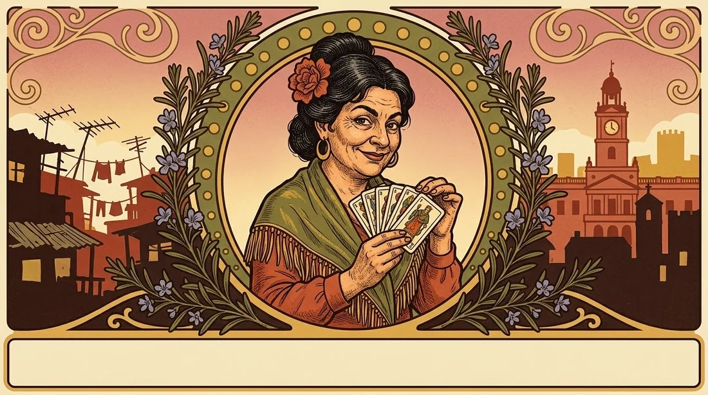

Un descampado, cuatro cartones y un Ayuntamiento con muchas ganas de multar
- Clic izquierdo: seleccionar. Arrastra para un recuadro.
- Clic derecho: mover, atacar, recoger chatarra, ir a una plaza o mandar a la vendedora de romero a la ciudad, donde busca transeúntes.
- Flechas, bordes o arrastrar con la rueda pulsada: mover la cámara. Rueda o + / −: zoom (en el móvil, pellizca). Espacio: ir al último ataque o a casa.
- F1: siguiente trabajador parado. F2: todo el ejército. Ctrl + número: guardar grupo; Mayús + número: añadir al grupo.
- Las plazas se quedan sin turistas: explora para encontrar más. Los contenedores de la ciudad también dan chatarra.
- Habilidades: pulsa su botón (o su tecla) y luego clic en el enemigo. Con un edificio seleccionado, clic derecho fija el punto de reunión.
- Derriba el Ayuntamiento antes de que desaloje la Casa del Patriarca.
Versión 0.7